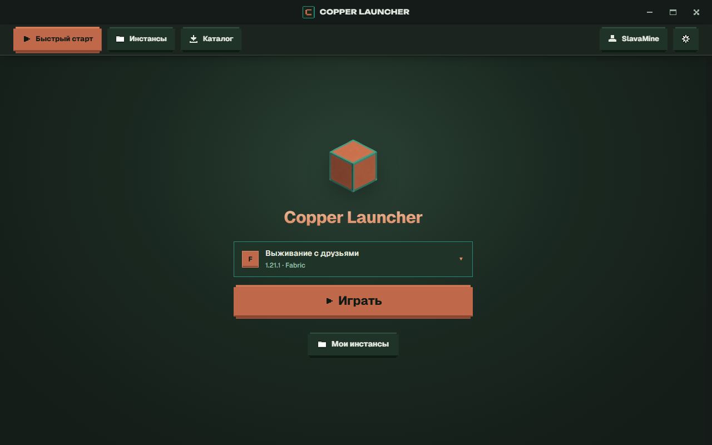
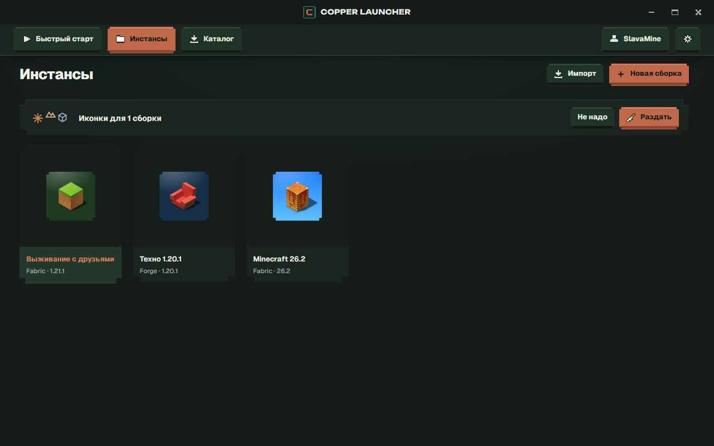
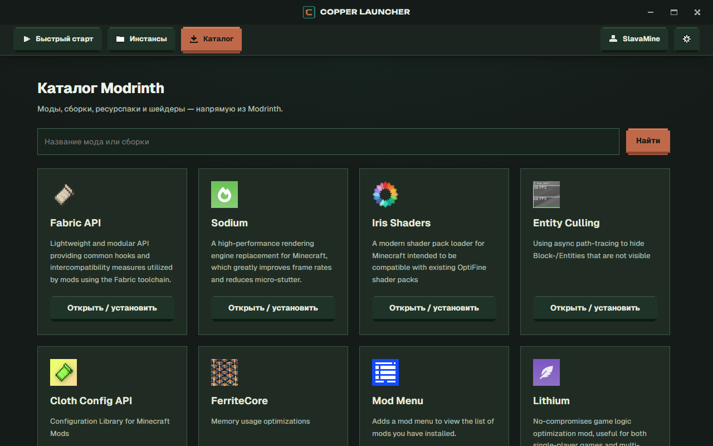

Сборки на любой вкус
Ванилла, Fabric, Forge, NeoForge и Quilt. Каждая сборка живёт в своей папке со своими модами и мирами.
Создавай сборки на Fabric, Forge, NeoForge и Quilt, ставь моды из Modrinth в один клик и играй с лицензией Microsoft. Без магазина, без телеметрии, без навязчивых окон.

Возможности
Copper делает одно дело хорошо: ставит Minecraft, моды и запускает игру.
Ванилла, Fabric, Forge, NeoForge и Quilt. Каждая сборка живёт в своей папке со своими модами и мирами.
Моды, сборки, ресурспаки и шейдеры прямо в лаунчере. Нужные зависимости подтянутся сами.
Официальная авторизация Microsoft. Пароль вводится только на сайте Microsoft, лаунчер его не видит.
Смотри скин в объёме, храни коллекцию на компьютере и меняй скин аккаунта в пару кликов.
Лаунчер не собирает статистику и не следит за тобой. Он обращается только к Mojang, Microsoft и каталогам модов.
Весь код на GitHub под лицензией GPL-3.0. Можно проверить, что внутри, и собрать лаунчер самому.
Как это выглядит


Установка
Нажми «Скачать для Windows» и возьми файл Copper-Setup.exe со страницы последнего релиза.
Выбери папку и нажми «Установить». Права администратора не нужны: лаунчер ставится только для тебя.
Нажми на «Аккаунты» → «Войти через Microsoft», создай сборку — Java лаунчер скачает сам.
Вопросы
Да, полностью. В лаунчере нет платных функций, подписок и рекламы.
Да. Для запуска нужен аккаунт Microsoft с купленной Minecraft: Java Edition. Пиратские и офлайн-аккаунты Copper не поддерживает.
Вход идёт через официальную страницу Microsoft — пароль ты вводишь там, а не в лаунчере. Токены хранятся на твоём компьютере в зашифрованном виде. Весь код открыт и доступен на GitHub.
У установщика нет платной цифровой подписи. Это не значит, что файл опасен: так Windows реагирует на любые неподписанные программы. Нажми «Подробнее» → «Выполнить в любом случае».
В папке данных лаунчера на твоём компьютере. Если удалить лаунчер, сборки и миры останутся на месте.
Пока готовый установщик есть только для Windows. Код поддерживает macOS и Linux — лаунчер можно собрать самому по инструкции на GitHub.
Скачай Copper Launcher и запусти свою первую сборку за пару минут.
Скачать для Windows